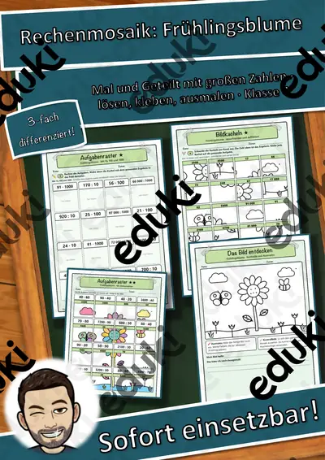
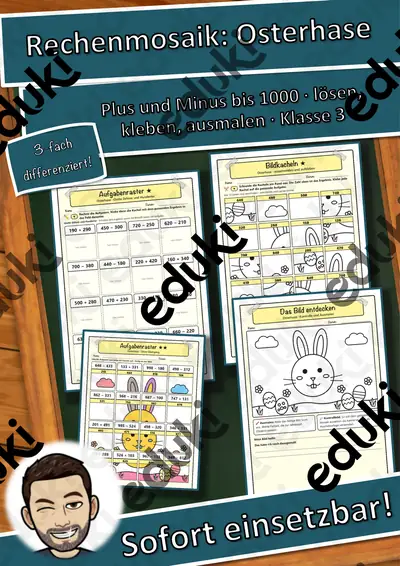

LF 6 Elektroniker/-in: Systematische Fehlereingrenzung bei Ausfällen – Übungen, Lösungen + Lernvideo

LF 1 Elektroniker/-in: Elektrische Größen messen und berechnen – Übungen, Lösungen + Lernvideo

LF 9 Kaufleute im Einzelhandel: Preisgestaltung: Vorwärts- und Rückwärtskalkulation – Übungen, Lösungen + Lernvideo

Rechenmosaik Igel – GRATIS-Sampler: Einmaleins lösen, kleben, ausmalen in 3 Stufen (Klasse 2–3)

Rechenmosaik Gesamtpaket: 10 Motive durch das Schuljahr, lösen – kleben – ausmalen (Klasse 1–4)

Rechenmosaik Paket Frühling und Sommer: 3 Motive, lösen – kleben – ausmalen (Klasse 1–4)

Rechenmosaik Paket Winter, Advent und Fasching: 4 Motive, lösen – kleben – ausmalen (Klasse 1–4)

Rechenmosaik Paket Herbst und St. Martin: 3 Motive, lösen – kleben – ausmalen (Klasse 1–4)

LF 8 Fachinformatiker/-in: Schnittstellen und Datenformate für den Datenaustausch – Übungen, Lösungen + Lernvideo

Rechenmosaik Eisbecher und Eistüte: Rechnen mit Geld – lösen, kleben, ausmalen in 3 Stufen (Klasse 3–4)

Rechenmosaik Frühlingsblume: Mal und Geteilt mit großen Zahlen – lösen, kleben, ausmalen in 3 Stufen (Klasse 4)

Rechenmosaik Osterhase: Plus und Minus bis 1000 – lösen, kleben, ausmalen in 3 Stufen (Klasse 3)

Rechenmosaik Faschingshut: Klammern und Punkt vor Strich – lösen, kleben, ausmalen in 3 Stufen (Klasse 3–4)

LF 7 Medizinische Fachangestellte: Dienst- und Urlaubsplanung im Praxisteam – Übungen, Lösungen + Lernvideo
Rechenmosaik Weihnachtsbaum: Geteilt-Aufgaben (Division) – lösen, kleben, ausmalen in 3 Stufen (Klasse 3)

Rechenmosaik Adventskranz: Einmaleins 6er bis 9er – lösen, kleben, ausmalen in 3 Stufen (Klasse 3)

Lernfeld 5 Verkäufer/-in: Wettbewerbsrecht in der Werbung – Einführung, Übungen, Lösungen + Lernvideo

Lauschtour – Hörrätsel mit QR-Code und Hör-Bingo, GRATIS-Sampler zu Geräuschen (Klasse 2–4)

Rechenmosaik Schneemann: Verdoppeln und Halbieren – lösen, kleben, ausmalen in 3 Stufen (Klasse 2–3)

LF 10 Kaufleute für Büromanagement: Kostenrechnung: BAB und Zuschlagskalkulation – Übungen, Lösungen + Lernvideo

Rechenmosaik Laterne: Einmaleins 2er bis 5er und 10er – lösen, kleben, ausmalen in 3 Stufen (Klasse 2)

Bewerbung & Praktikum – Paket Vorstellungsgespräch, Test & Vertrag: 6 Einheiten (Klasse 7–10)

Bewerbung & Praktikum – Paket Bewerbungsunterlagen: 5 Einheiten (Klasse 7–10)

Rechenmosaik Herbstpilz: Plus und Minus bis 100 – lösen, kleben, ausmalen in 3 Stufen (Klasse 2)

Bewerbung & Praktikum – Paket Praktikum (Berufswahl bis Reflexion): 8 Einheiten (Klasse 7–10)

Rechenmosaik Herbstdrachen: Rechnen bis 20 – lösen, kleben, ausmalen in 3 Stufen (Klasse 1)

Praktikumsmappe & Praktikumsbericht – Bewerbung & Praktikum, 3 Stufen, mit Hilfen & Lösungen (Klasse 7–10)

Lernfeld 14 Verkäufer/-in: Finanzierungsarten und Zahlungsverzug – Einführung, Übungen, Lösungen + Lernvideo

LF 5 Verkäufer/-in: Werbeplanung und Einsatz von Werbemitteln – Übungen, Lösungen + Lernvideo

LF 4 Kaufleute für Büromanagement: Lieferantenvergleich mit Nutzwertanalyse – Übungen, Lösungen + Lernvideo

Sport-Werkstatt Gesamtpaket: 13 Sportarten, Aufgabenkarten in 3 Stufen (Klasse 3–8)

Ausbildungsvertrag Basics – Bewerbung & Praktikum, 3 Stufen, mit Hilfen & Lösungen (Klasse 7–10)

Sport-Werkstatt Paket Laufen & Spiele: 2 Sportarten in 3 Stufen (Klasse 3–8)

DaZ & Leseförderung Materialpaket: Partner-Werkstatt – Partnerdiktat, Hör-Mal-Bilder, Lese-Fitness-Pass (3 Niveaus, QR-Audio)

LF 9 Kfz-Mechatroniker/-in: Klimaanlagenservice: Kältemittelrückgewinnung und Dichtigkeitsprüfung – Übungen, Lösungen +

Sport-Werkstatt Paket Bewegungskünste: 4 Sportarten in 3 Stufen (Klasse 3–8)

Zusage, Absage & Nachfassen – Bewerbung & Praktikum, 3 Stufen, mit Hilfen & Lösungen (Klasse 7–10)

Hörwerkstatt Geräusche – Gesamtpaket: 6 Einheiten mit Hörstationen, 3 Stufen (Klasse 2–4)

Assessment-Center – Bewerbung & Praktikum, 3 Stufen, mit Hilfen & Lösungen (Klasse 7–10)

Sport-Werkstatt Paket Schläger & Stock: 3 Sportarten in 3 Stufen (Klasse 3–8)

Einstellungstest: Deutsch, Mathe & Logik – Bewerbung & Praktikum, 3 Stufen, mit Hilfen & Lösungen (Klasse 7–10)

Sport-Werkstatt Paket Ballspiele: 4 Sportarten in 3 Stufen (Klasse 3–8)

Vorstellungsgespräch: Auftreten, Körpersprache & Rollenspiele – Bewerbung & Praktikum, 3 Stufen, mit Hilfen & Lösungen (Klasse 7–10)

Sport-Werkstatt Kleine Spiele & Staffeln: Aufgabenkarten in 3 Stufen & Kurztest (Klasse 3–8)

Vorstellungsgespräch: Fragen, Antworten & Gegenfragen – Bewerbung & Praktikum, 3 Stufen, mit Hilfen & Lösungen (Klasse 7–10)

Sport-Werkstatt Klettern & Balancieren: Aufgabenkarten in 3 Stufen & Kurztest (Klasse 3–8)

Online-Bewerbung – Bewerbung & Praktikum, 3 Stufen, mit Hilfen & Lösungen (Klasse 7–10)

Sport-Werkstatt Tanz & Gymnastik: Aufgabenkarten in 3 Stufen & Kurztest (Klasse 3–8)
Keine Materialien gefunden – versuch einen anderen Suchbegriff oder Filter.